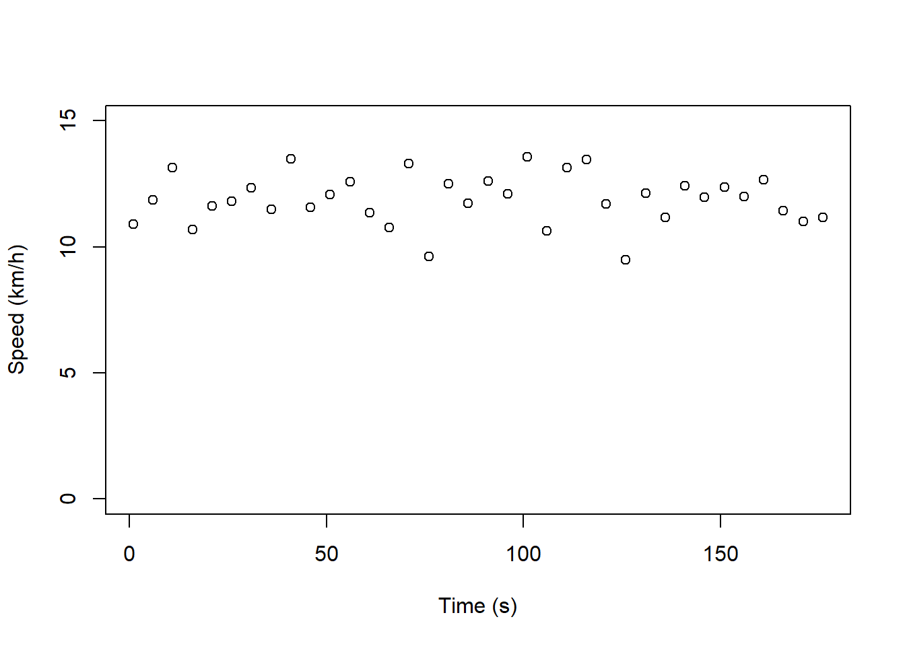
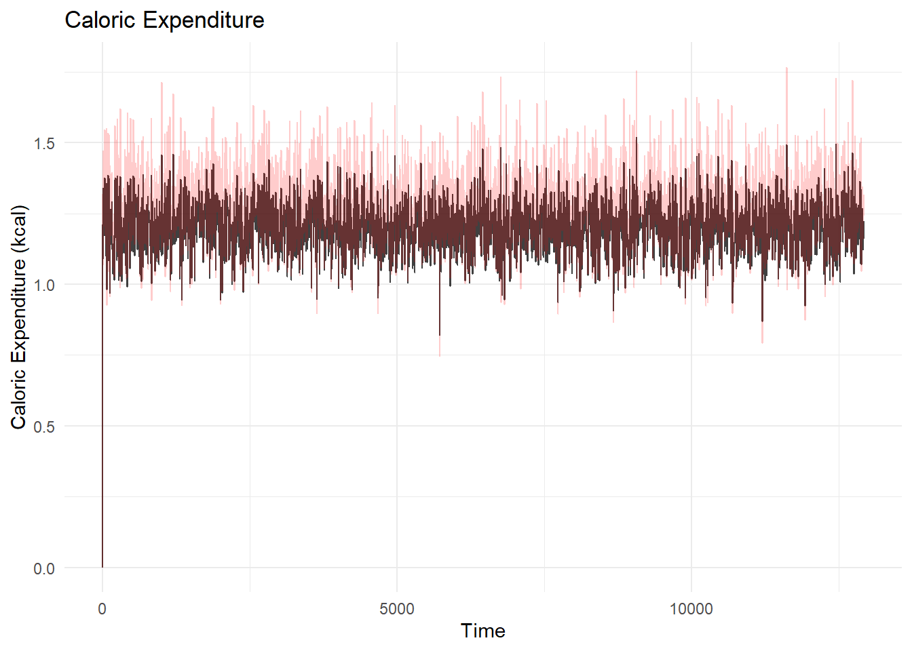

Caloric Expenditure During a Marathon
In this post, I work through two methods of estimating caloric expenditure during a marathon.
The calculations we’ll be using are extensions of Leger and Mercier’s work on VO2max and di Prampero’s work on metabolic energy and power. Specifically, we’ll be transforming the intended outputs to the kCal equivalents.
Although I’ve discussed caloric expenditure in the past, I feel that revisiting the topic can provide greater context and applicability.
We'll never share or sell your email address. By subscribing, you agree with Revue’s Terms of Service and Privacy Policy.
Load Libraries
library(tidyverse) # for tidy code and plots
theme_set(theme_minimal()) # set ggplot2 themeData Simulation
We’ll be simulating data for this post. We’ll generate the athlete’s speed using the rnorm() function with mean set to 3.25 m/s and sd to 0.25 m/s to to represent a runner’s consistent speed over time. In this example, we’d expect the runner to complete the marathon in approximately 3.5 to 3.6 hours
The following code generates the sample data which includes:
1. The time, sampled every 5 s
2. The runner’s speed that is normally distributed, in m/s and km/h
3. The distance the runner has covered, in m and km
set.seed(2) # for reproducibility
marathon <- tibble(time = seq(1, 12960, by = 5),
speed_mps = rnorm(length(time), mean = 3.25, sd = 0.25),
speed_kph = speed_mps * 3.6,
dist_m = cumsum(speed_mps * 5),
dist_km = dist_m * 0.001
)To make my life easier down the road, I also created variables that calculate the differences in time, speed, and distance between observations. I bias the diff() function, but you can also use the lag() function from the Tidyverse.
marathon <- marathon %>%
mutate(speed_diff_mps = c(0, diff(speed_mps)),
time_diff = c(0, diff(time)),
dist_diff_m = c(0, diff(dist_m)),
dist_diff_km = c(0, diff(dist_km)))Finally, to calculate the athlete’s acceleration, I divided the difference in speed by the difference in time, and set the initial acceleration value to zero.
marathon$accel = marathon$speed_diff_mps/ marathon$time_diff
marathon$accel[1] <- 0# A tibble: 6 × 10
time speed_mps speed…¹ dist_m dist_km speed…² time_…³ dist_…⁴ dist_…⁵ accel
<dbl> <dbl> <dbl> <dbl> <dbl> <dbl> <dbl> <dbl> <dbl> <dbl>
1 1 3.03 10.9 15.1 0.0151 0 0 0 0 0
2 6 3.30 11.9 31.6 0.0316 0.270 5 16.5 0.0165 0.0541
3 11 3.65 13.1 49.8 0.0498 0.351 5 18.2 0.0182 0.0701
4 16 2.97 10.7 64.7 0.0647 -0.680 5 14.8 0.0148 -0.136
5 21 3.23 11.6 80.8 0.0808 0.263 5 16.1 0.0161 0.0525
6 26 3.28 11.8 97.2 0.0972 0.0532 5 16.4 0.0164 0.0106
# … with abbreviated variable names ¹speed_kph, ²speed_diff_mps, ³time_diff,
# ⁴dist_diff_m, ⁵dist_diff_kmExploratory Analyses
Since we simulated the data, we already know the data structure. To visualize whether the runner’s speed over time remains consistent, we can plot it using simple graphics from base R.
We’ll only visualize the first 3 minutes that the athlete ran.
plot(speed_kph ~ time, data = marathon[1:(180/5), ],
ylim = c(0, 15),
xlab = "Time (s)",
ylab = "Speed (km/h)")
Caloric Expenditure
We’ll use a few different methods of calculating caloric expenditure. The majority of the calculations originate from research by Leger and Mercier. We’ll also derive caloric expenditure from the metabolic power formula (di Prampero) which is a little trickier.
Leger-Mercier kCal
Leger and Mercier’s initial work modelled VO2 max utilization (VdotO2 max). We can convert oxygen utilization to kCals using the vo2.cal.expend() function built below.
The researchers introduced various calculations that encompass the runner’s speed and terrain. Since the athlete maintains a consistent pace, we’ll use the formula that was derived based on athletes running around a track.
vo2.track <- function (speed.kph) {
vo2 = 3.5 * speed.kph
return(vo2)
}This is then converted to caloric expenditure which is capped at 1.05 kcal/km*kg. Setting the upper limit has its roots in previous work on METs and won’t be explored further in this post.
vo2.cal.expend <- function(speed.kph){
vo2 = vo2.track(speed.kph)
ce = vo2 * 5 * 60/1 * 1/1000 * 1/speed.kph
ce = ifelse(ce > 1.05, 1.05, ce)
return(ce)
}di Prampero kCal
Metabolic power is assessed as met.energy * speed where met.energy is:
\[ 155.4es^5 - 30.4es^4 - 43.3es^3 + 46.3es^2 + 19.5es + 3.6) * 1.29 \] where \(es\) is the runner’s equivalent slope and is returned in joules/kg*m. Luckily, kiloJoules are converted to kCal by dividing it by 4184.
To calculate metabolic energy, we’ll need:
1. The runner’s “equivalent slope”
2. Acceleration between time points which we already calculated
The runner’s “equivalent slope” represents the angle of the runner’s body as they accelerate or decelerate. The calculations are returned as intermediary calculations,torso and equiv_slope, in the function below. In summary, we utilize horizontal and vertical acceleration to find the runner’s torso angle. This returns values while accelerating (positive angle) and decelerating (negative angle).
met.energy <- function (accel) {
torso <- atan(9.81/accel)
equiv_slope <- tan(pi/2 - torso)
met_energy = (155.4 * equiv_slope^5 - 30.4 * equiv_slope^4 -
43.3 * equiv_slope^3 + 46.3 * equiv_slope^2 + 19.5 *
equiv_slope + 3.6) * 1.29
return(met_energy)
}
met.cal.expend <- function(met.energy) {
ce = met.energy/4184 # j to kcal
}Caloric Expenditure
Calculating Acceleration
To assess caloric expenditure as it relates to the runner, we need the athlete’s mass. For this example, we’ll set the runner’s body mass to 70 kg.
body.mass <- 70 # in kgkCal from VO2
Calculate Normalized Expenditure
cals.vo2 <- vo2.cal.expend(marathon$speed_kph)
marathon$cals.vo2 <- cals.vo2Instantaneous kCals (non-normalized) based on the athlete’s body mass and distance covered, and cumulative kCals are assessed below:
marathon <- marathon %>%
mutate(cals.vo2.inst = cals.vo2 * dist_diff_km * body.mass,
total.cal.vo2 = cumsum(cals.vo2.inst))kCal from Metabolic Energy
Since we’ve already calculated acceleration, all we need to do now is repeat the steps above using the met.energy and met.energy.expend functions.
marathon <- marathon %>%
mutate(met.energy = met.energy(marathon$accel),
cals.met.energy = met.cal.expend(met.energy))
marathon <- marathon %>%
mutate(cals.met.energy.inst = cals.met.energy * dist_diff_m * body.mass,
total.cal.met.energy = cumsum(cals.met.energy.inst))The End Result
At this point, we’ve built a large data set. Since we are interested in the total caloric expenditure, we’ll call tail() to look at the runner’s final 30 s. Hopefully, everything looks good and makes sense!
# A tibble: 6 × 17
time speed…¹ speed…² dist_m dist_km speed_…³ time_…⁴ dist_…⁵ dist_…⁶ accel
<dbl> <dbl> <dbl> <dbl> <dbl> <dbl> <dbl> <dbl> <dbl> <dbl>
1 12931 3.33 12.0 42224. 42.2 -0.172 5 16.7 0.0167 -0.0344
2 12936 3.33 12.0 42241. 42.2 -0.00506 5 16.6 0.0166 -0.00101
3 12941 3.11 11.2 42257. 42.3 -0.212 5 15.6 0.0156 -0.0424
4 12946 3.24 11.7 42273. 42.3 0.131 5 16.2 0.0162 0.0262
5 12951 3.65 13.2 42291. 42.3 0.410 5 18.3 0.0183 0.0821
6 12956 3.05 11.0 42306. 42.3 -0.607 5 15.2 0.0152 -0.121
# … with 7 more variables: cals.vo2 <dbl>, cals.vo2.inst <dbl>,
# total.cal.vo2 <dbl>, met.energy <dbl>, cals.met.energy <dbl>,
# cals.met.energy.inst <dbl>, total.cal.met.energy <dbl>, and abbreviated
# variable names ¹speed_mps, ²speed_kph, ³speed_diff_mps, ⁴time_diff,
# ⁵dist_diff_m, ⁶dist_diff_kmTotal Calories Burned
Finally, we can pull the athlete’s total caloric expenditure by using the max() function. By summing the athlete’s total kCal output, the final value is their total expenditure.
Code
cat("Total Caloric Estimates:", "\nVO2: ", round(max(marathon$total.cal.vo2), 0),
"\nMetabolic Energy: ", round(max(marathon$total.cal.met.energy), 0))Total Caloric Estimates:
VO2: 3108
Metabolic Energy: 3295The difference between estimates is 187. Although it may seem substantially different, it is negligible when compared to the overall estimate.
From a quick Google search, it looks like caloric expenditure typically ranges from 2500 to 3500 calories depending on the individual’s mass and speed. Since our runner is heavier than the typical runner, we should expect that they reside closer to the 3500 calorie mark.
Improved Accuracy
Since a marathon is 42.195 km, we can remove any distance exceeding the marathon’s start to finish. The end result is trivial:
Code
marathon <- marathon %>%
filter(dist_km <= 42.2)
cat("Total Caloric Estimates:", "\nVO2: ", round(max(marathon$total.cal.vo2), 0),
"\nMetabolic Energy: ", round(max(marathon$total.cal.met.energy), 0))Total Caloric Estimates:
VO2: 3100
Metabolic Energy: 3286Caloric Expenditure Visual
Finally, the plot below provides a visual of our caloric expenditure estimate. It is very clear that the metabolic energy method is consistently greater than the VO2max method. Unfortunately, there is no way in knowing which estimate is more accurate.
Code
ggplot(marathon, aes(x = time)) +
geom_line(aes(y = cals.vo2.inst), alpha = 0.75) +
geom_line(aes(y = cals.met.energy.inst), colour = "red", alpha = 0.2) +
ggtitle("Caloric Expenditure") +
xlab("Time") +
ylab("Caloric Expenditure (kcal)")
We'll never share or sell your email address. By subscribing, you agree with Revue’s Terms of Service and Privacy Policy.